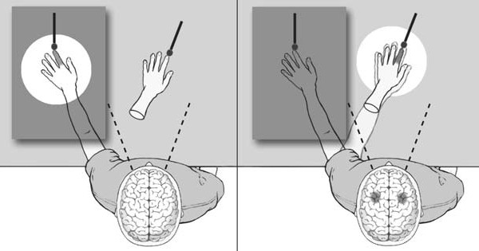
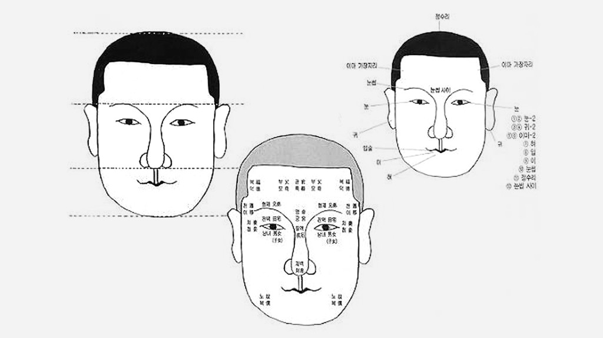
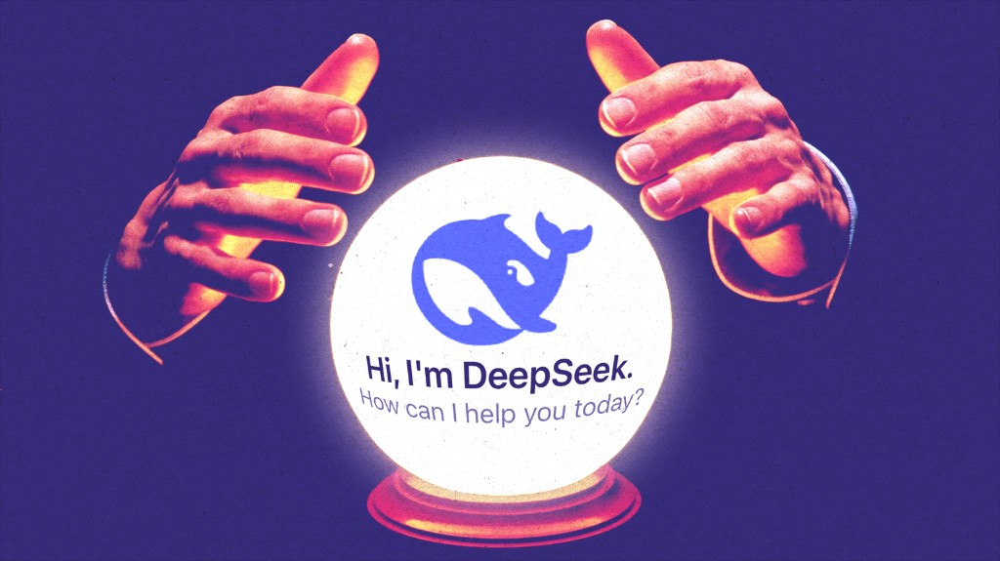
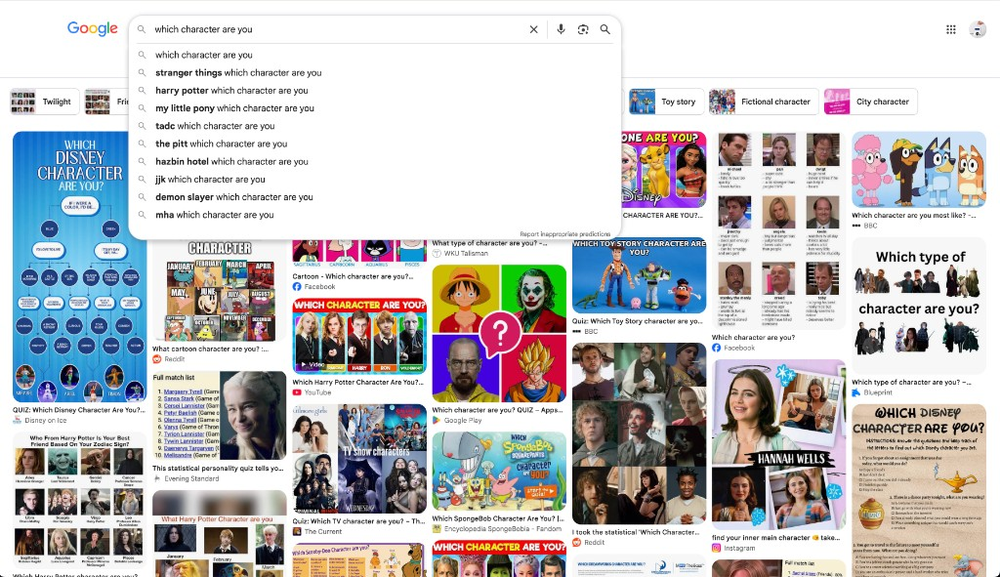

Self is the first interest in the third section of Yunso's Triangle, along with Seemingly trivial things. It is anything related to the self or ego.
Self is the first interest in the third section of Yunso's Triangle, along with Seemingly trivial things: anything related to the self or ego.
Background
For as long as she can remember, she has liked to observe how other people view themselves. She thinks people interpret the world in relation to themselves, project themselves onto external things, and unconsciously obsess over who they are and why they matter.
She observes how people view themselves, and how they project themselves onto the world.
Self as an illusion
She is drawn to accounts that treat the self as an illusion, including eliminativism, which holds that our everyday psychological concepts may not pick out anything real.
David Hume, looking inward, found only particular perceptions and never a continuous self, and concluded that the mind is “nothing but a bundle or collection of different perceptions.”[1]
Thomas Metzinger argues that no one has or is a self. What appears to be one is a transparent self-model: a representation the brain constructs but does not recognise as such.[2]
Buddhism reaches a similar conclusion. Its doctrine of anattā (not-self) holds that a person is a changing collection of physical and mental processes, the five aggregates, with no permanent self behind them.
She is drawn to the self as an illusion, including eliminativism. David Hume found only a bundle or collection of different perceptions.[1] Thomas Metzinger argues that no one is a self, only a transparent self-model.[2] In Buddhism, anattā holds that a person is the five aggregates, with no permanent self.
-

Rubber hand experiment -
Mirror Stage
Topics
She is fascinated by fortune-telling, palm reading, horoscopes, physiognomy, dreams, the mirror stage, personality tests such as the Myers–Briggs Type Indicator (MBTI), and others like them. She has recently been researching Saju, a Korean form read from birth information. Related practices exist in many places, and they retell a person's past as well as predict the future.
Also fortune-telling, palm reading, horoscopes, physiognomy, dreams, the mirror stage, personality tests such as the Myers–Briggs Type Indicator, and Saju, read from birth information.
-

Physiognomy -
Saju
Technology
She often thinks about how technology enters this. Prediction models seem to work as a present-day form of fortune-telling, and digital pop culture affects how people create their personas. This interest is why she is drawn to real-time interaction and to using personal data as input. Her work is already shaped by it, and that is expected to continue.
Prediction models work as present-day fortune-telling, and pop culture shapes personas. That is why she uses real-time interaction and personal data as input.
-

Prediction -

Pop Culture
References
- Hume, David (1739). A Treatise of Human Nature, Book I, Part IV, Section VI. Wikisource. ↑
- Metzinger, Thomas (2003). Being No One: The Self-Model Theory of Subjectivity. MIT Press. ↑